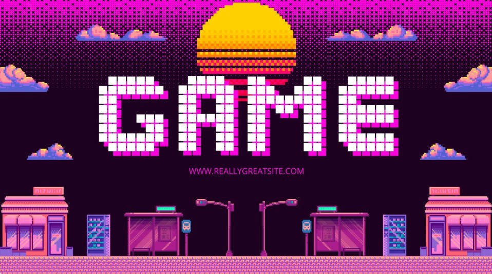

Introduction
Les jeux vidéo font aujourd’hui partie intégrante de la culture moderne. Ils combinent divertissement, technologie et créativité.

Les jeux vidéo font aujourd’hui partie intégrante de la culture moderne. Ils combinent divertissement, technologie et créativité.
Les premiers jeux vidéo sont apparus dans les années 1970. Depuis, l’évolution technologique a permis des graphismes et des expériences de plus en plus immersives.
Il existe plusieurs genres de jeux vidéo tels que les jeux d’action, de stratégie, de sport, d’aventure et de simulation.
Les jeux vidéo peuvent améliorer la réflexion, la coordination et le travail en équipe, mais un usage excessif peut entraîner une dépendance.
| Plateforme | Type | Avantages | Inconvénients |
|---|---|---|---|
| PC | Ordinateur | Puissance, personnalisation | Coût élevé |
| Console | Salon | Simplicité | Moins flexible |
| Mobile | Portable | Accessibilité | Graphismes limités |